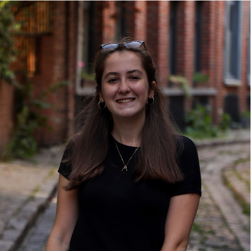
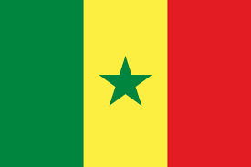
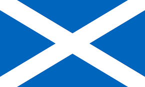
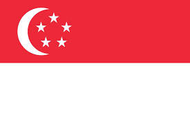
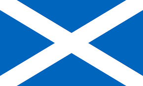
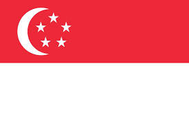

1. Start-Us
Start-us is a small event-planning company whereby events are organised digitally and physically for any sectors. Start-us is a platform, where individuals can win in experience and in confidence.
No matter the qualification, the background and the mental and physical capacity of the individual. Experience helps us to grow. When motivated, experienced and confindent, everything is possible.
2. My ideal startup
Event-planning has been completely changed by the Covid-19 pandemic outbreak in 2020. Adapting ourselves is extremely important. Adapting ourselves to contextual situation is one thing. I believe to adapt ourselves, we have to change our habits. This is why, it is fully possible for all, no matter the person, no matter the context, we can adapt ourselves and work together.
Born with a speech-disability, I realised that disabled individuals were put aside. No one talks about them and no one fights for them. They have a fight for adapting themselves to us. We should adapt ourselves to them.
That is why, when recruiting, I will ease their insertion. In other words, I will not put aside someone for a particular mental or physical disability. On the contrary, I aspire to help them grow and win in experience. I believe that an individual with autism, with down syndrome or with an unknown-illness can do what we do. We just have to adapt our pace, our habits and be patient. With trust and time, we can reach the unreachable.
3. My own experience.
Before creating my own start-up, I need to gain my own experience. Not only to pass on my knownledge, but to also create a durable start-up.
Adaptibility is natural for me. Born in Africa to french and scottish parents, I had to adapt myself to different environments when travelling. After 17 years in a multi-ethnical, multi-racial and multi-cultural country: Singapore, I naturally gained the capacity to adapt myself to different situations I was stranger to.
Born with a speech-difficulty, I have been told that my choice of career was very limited. People kept on setting limits, I kept on pushing them away. Unfortunately for them, my passion for event-planning kept me fighting for what I wanted to do. Not only have I found what I wanted to do, but I refuse to let others be brought down for a disability they did not ask for.
This is why, I would like to use my so-considered 'disabled voice' as the voice for those who are silenced.
 



If you wish to know more about my personal and professional experience please click the link below.
my LinkedIn